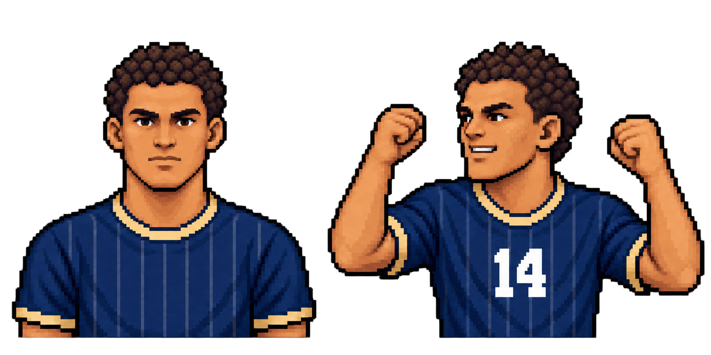
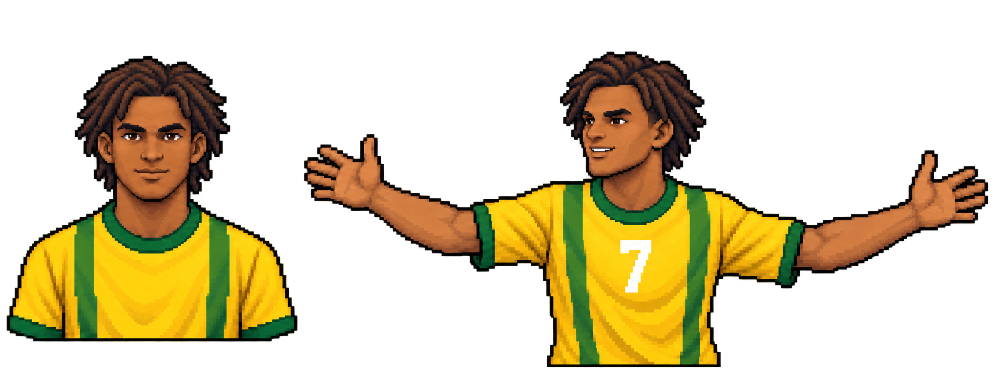
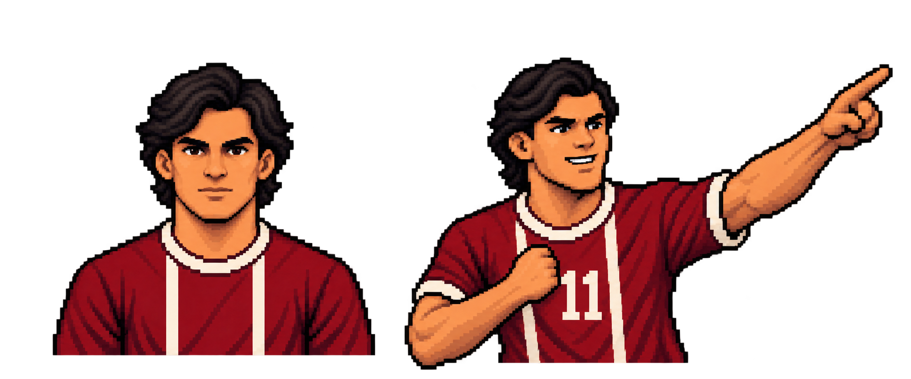
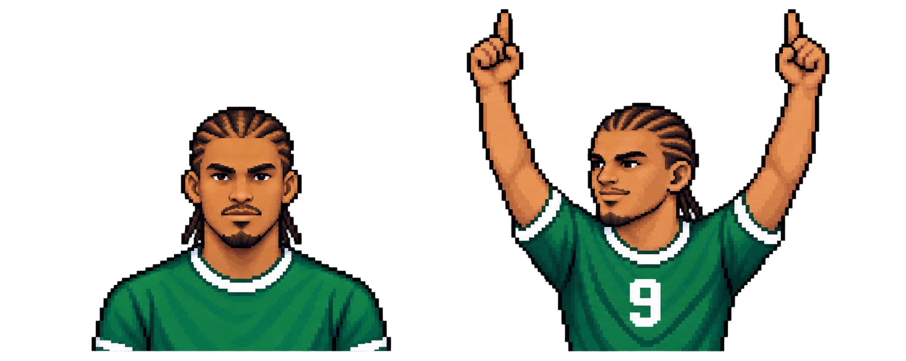

Spieler A · Nummer 14
Beide Fäuste oben

Links frontales Profilbild, rechts die einmal zugeteilte Jubelpose. Die Pose bleibt über die Karriere fest. Ansichten unten zeigen die geplanten Spielgrößen; dies sind Bildentwürfe und noch keine eingebauten Laufzeit-Sprites.



